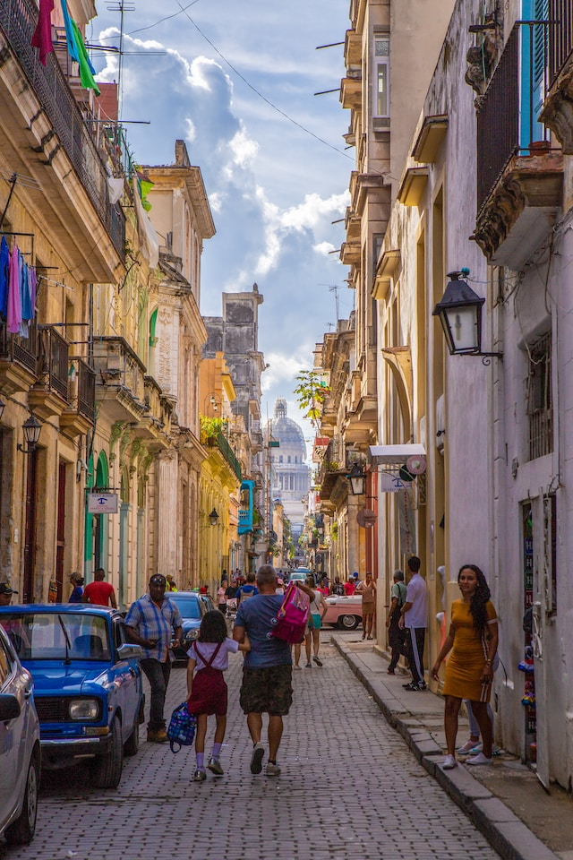
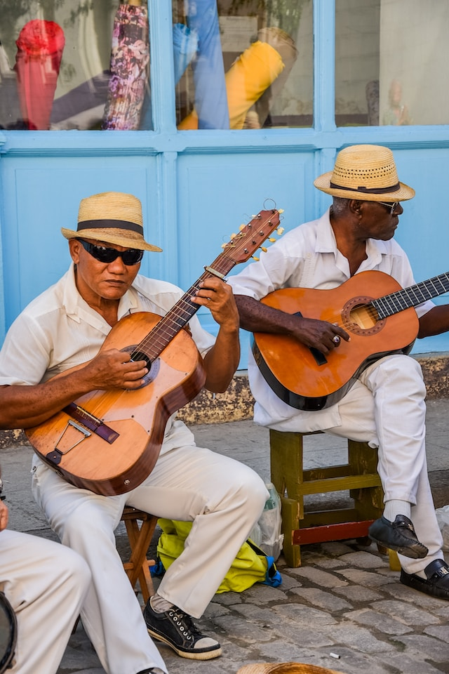

Havana, the capital and the embodiment of Cuban culture, intellect, politics, and history, showcases a stunning architectural blend, from Moorish and Gothic to Baroque and Neoclassical. Recognized as a UNESCO World Heritage site in 1982 and one of the seven wonder cities of the modern world in 2016, Havana is steeped in traditions and legends, birthing luminaries like Felix Varela, Jose Marti, and Rita Montaner.
Founded around 1514 on the south coast, Havana, initially known as San Cristobal de La Habana, found its permanent home on the northern coast. In 1519, beneath the Ceiba tree, the first mass and town council meeting took place, marking the city's birth. Havana grew into the archipelago's economic and governmental center, boasting a rich history.
Havana, celebrating its 500 years, wears the marks of time with pride. The city's people and authorities work tirelessly to reconstruct and preserve its splendor, rooted in a rich cultural tapestry and the resilience of its residents. Havana is not just a city; it's a testament to humanity's spirit and its ability to endure and thrive.
